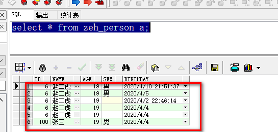
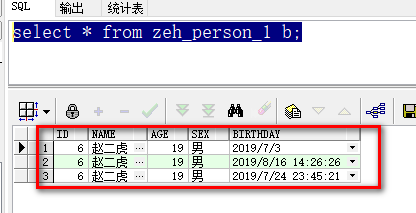
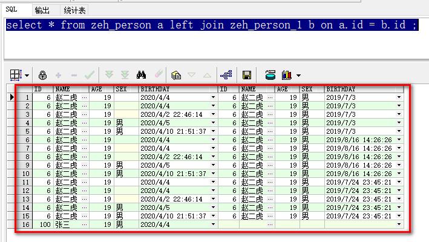
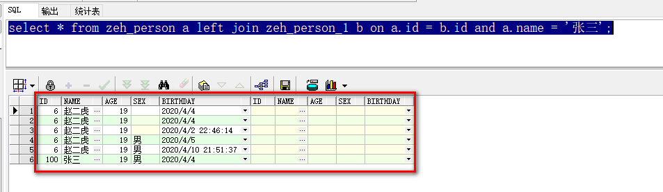
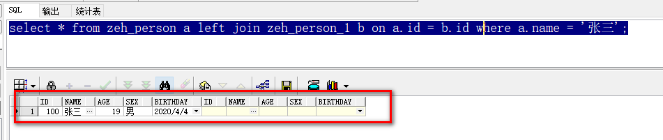

SQL执行顺序
1、笛卡尔积
sql和mysql执行顺序，发现内部机制是一样的。最大区别是在别名的引用上。
顾名思义, 这个概念得名于笛卡儿. 在数学中，两个集合 X 和 Y 的笛卡儿积（Cartesian product），又称直积，表示为 X × Y，是其第一个对象是 X 的成员而第二个对象是 Y 的一个成员的所有可能的有序对。
假设集合A={a,b}，集合B={0,1,2}，则两个集合的笛卡尔积为{(a,0),(a,1),(a,2),(b,0),(b,1), (b,2)}。
可以扩展到多个集合的情况。类似的例子有，如果A表示某学校学生的集合，B表示该学校所有课程的集合，则A与B的笛卡尔积表示所有可能的选课情况。
比如有A表数据如下：
name age
张三 22
李四 18
有B表数据如下：
city price
西安 10000
咸阳 8000
则A表和B表的笛卡尔积如下：
张三 22 西安 10000
张三 22 咸阳 8000
李四 18 西安 10000
李四 18 咸阳 8000
也就是说，对于每一张表数据来说，其呈现出来的形态就是一个表结构，其中每一行数据称作一个行对象。
笛卡尔积就是两张表的所有行对象进行组合，得到的一个虚拟的全量数据。
一般要避免笛卡尔积的出现，因为笛卡尔积很容易膨胀。比如表A的数据假如有N行，表B的数据加入有M行，则表A和表B的笛卡尔积将有N*M行。
将一张有N个行对象的表和一张有M个行对象的表，其笛卡尔积将是N*M个行对象。
2、join类型
cross join 是笛卡儿乘积就是一张表的行数乘以另一张表的行数。
inner join 只返回两张表连接列的匹配项。
left join 第一张表的连接列在第二张表中没有匹配时,第二张表中的值返回null。
right join 第二张表的连接列在第一张表中没有匹配是,第一张表中的值返回null。
full join 返回两张表中的行 left join+right join。
3、 join和笛卡尔积
在对两表进行各种类型的join (cross, left, right, full, inner)时, 都需要构造笛卡尔积。
有时想想不可思议, 若两个特大表进行join, 难道sql就直接上笛卡尔积吗? 难道不事前进行on的条件过滤吗? 那数据量得多大?内存会被搞崩吧？性能能好吗？
4、 查一下MSDN就清楚了整个SQL的执行顺序
查一下MSDN就清楚了整个SQL的执行顺序:
SQL执行顺序
以下步骤显式了SELECT语句的处理顺序：
1.FROM
2.ON
3.JOIN
4.WHERE
5.GROUP BY
6.WITH CUBE or WITH ROLLUP
7.HAVING
8.SELECT
9.DISTINCT
10.ORDER BY
11.TOP
也就是说, 先进行on的过滤, 而后才进行join, 这样就避免了两个大表产生全部数据的笛卡尔积的庞大数据.
这些步骤执行时, 每个步骤都会产生一个虚拟表，该虚拟表被用作下一个步骤的输入。这些虚拟表对调用者（客户端应用程序或者外部查询）不可用。只是最后一步生成的表才会返回 给调用者。
如果没有在查询中指定某一子句，将跳过相应的步骤。
5、 ON 和 WHERE
On的其余过滤条件放Where里效率更高还是更低?
select * from table1 as a inner join table2 as b on a.id=b.id and a.status=1;
select * from table1 as a inner join table2 as b on a.id=b.id where a.status=1;
查查MSDN就清楚了 :
ON和Where的效率
如果是inner join, 放on和放where产生的结果一样, 但没说哪个效率速度更高?
如果有outer join (left or right), 就有区别了, 因为on生效在先, 已经提前过滤了一部分数据, 而where生效在后。
综合一下, 感觉还是放在on里更有效率, 因为它先于where执行。
听说可以通过sql的查询计划来判别实际的结果, 明天再研究, 欢迎高手给与批评指正。
6、 2011/11/21 最新体会
刚看到《Microsoft SQL Server 2008技术内幕: T-SQL查询》一书中对于连接的描述和我先前理解的不太一样：
Itzib在书上说先笛卡尔积, 然后再on过滤, 如果join是inner的, 就继续往下走, 如果join 是left join, 就把on过滤掉的左主表中的数据再添加回来; 然后再执行where里的过滤;
on中不是最终过滤, 因为后面left join还可能添加回来, 而where才是最终过滤。
只有当使用外连接(left, right)时, on 和 where 才有这个区别, 如果用inner join, 在哪里指定都一样, 因为on 之后就是where, 中间没有其它步骤。
参考资料：
SELECT (Transact-SQL)
FROM (Transact-SQL)
SQL Server 查询处理中的各个阶段(SQL执行顺序)
INNER JOIN时条件放在ON里还是WHERE里效率更高
连接语句的运算顺序或原理
7、 sql执行顺序-重点
1. from
求笛卡尔积。不论是什么类型的联接运算，首先都是执行交叉连接（cross join），对from的前两张表求笛卡儿积，生成虚拟表VT1-J1。
2. on
对生成的全量笛卡尔积虚拟表进行on条件过滤，on的条件具体分如下场景：
A left join B： on的条件是对A和B表进行过滤，当join时再将A表过滤的数据进行补全，然后根据过滤后的条件生成临时表返回。
A right join B： on的条件是对A和B表进行过滤，当join时再将B表过滤的数据进行补全，然后根据过滤后的条件生成临时表返回。
A inner join B： on的条件是对A表和B表同时进行过滤，返回on条件双方共同符合条件的临时表返回。
注意，如果on (a = b and c = d)对于这种情况，inner join 的结果和将on后面的条件写在最后的where条件后是一样的。
但是对于 left join 和 right join 而言，on 后面的条件和where后面的条件过滤的目标是不同的。
一句话，on后面的条件是对副表（A表或者B表）进行单个过滤的，而where是对返回的整个临时笛卡尔积临时表进行整体过滤的。
其实以上结果的关键原因就是left join,right join,full join的特殊性，不管on上的条件是否为真都会返回left或right表中的记录，full则具有left和right的特性的并集。
而inner jion没这个特殊性，则条件放在on中和where中，返回的结果集是相同的。
3. join
实际上第（2）步，on的条件总是对全量的笛卡尔积统一进行过滤，即转换成Inner join，对主从表同时进行过滤。
而对于left join或者right join、full join等，是在 join 这一步进行数据回写的。
原理：on 条件对全量笛卡尔积进行统一过滤。
join 时，数据库引擎发现是 left join ，则将左表中已经过滤的数据又回写添加回来；如果是 left join，则将右表中过滤的数据回写添加回来；
full join是两张表的过滤的数据都回写添加回来。
4. where
5. group by(开始使用select中的别名，后面的语句中都可以使用)
6. avg,sum....
7. having
8. select
9. distinct
10. order by
11. limit/top
从这个顺序中我们不难发现，所有的查询语句都是从from开始执行的，在执行过程中，每个步骤都会为下一个步骤生成一个虚拟表，这个虚拟表将作为下一个执行步骤的输入。
第一步：首先对from子句中的前两个表执行一个笛卡尔乘积，此时生成虚拟表 vt1（选择相对小的表做基础表）。
第二步：接下来便是应用on筛选器，on 中的逻辑表达式将应用到 vt1 中的各个行，筛选出满足on逻辑表达式的行，生成虚拟表 vt2。
第三步：如果是outer join 那么这一步就将添加外部行，left outer jion 就把左表在第二步中过滤的添加进来，如果是right outer join 那么就将右表在第二步中过滤掉的行添加进来，这样生成虚拟表 vt3 。
第四步：如果 from 子句中的表数目多余两个表，那么就将vt3和第三个表连接从而计算笛卡尔乘积，生成虚拟表，该过程就是一个重复1-3的步骤，最终得到一个新的虚拟表 vt3。
第五步：应用where筛选器，对上一步生产的虚拟表引用where筛选器，生成虚拟表vt4，在这有个比较重要的细节不得不说一下，对于包含outer join子句的查询，就有一个让人感到困惑的问题，到底是在on筛选器还是用where筛选器指定逻辑表达式呢？
on和where的最大区别在于，如果是在on处指定逻辑表达式，那么在第三步outer join中还可以把移除的行再次添加回来，而where的移除是最终的。
举个简单的例子，有一个学生表（班级,姓名）和一个成绩表(姓名,成绩)，我现在需要返回一个x班级的全体同学的成绩，但是这个班级有几个学生缺考，也就是说在成绩表中存在没有记录的行对象。
为了得到我们预期的结果我们就需要在on子句指定学生和成绩表的关系（学生.姓名=成绩.姓名）。
那么我们是否发现在执行第二步的时候，对于没有参加考试的学生记录就不会出现在vt2中，因为他们被on的逻辑表达式过滤掉了,但是我们用left outer join就可以把左表（学生）中没有参加考试的学生找回来。
因为我们想返回的是x班级的所有学生，如果是在on中应用学生.班级='x'的话，对于left outer join来说这个条件是无效的，因为它始终会把主表中的所有学生记录找回。
所以要想对主表的数据进行过滤，就只能在where筛选器中应用学生.班级='x' 因为它的过滤是最终的。
第六步：group by 子句将中的唯一的值组合成为一组，得到虚拟表vt5。如果应用了group by，那么后面的所有步骤都只能得到的vt5的列或者是聚合函数（count、sum、avg等）。原因在于最终的结果集中只为每个组包含一行。这一点请牢记。
第七步：应用cube或者rollup选项，为vt5生成超组，生成vt6.
第八步：应用having筛选器，生成vt7。having筛选器是第一个也是为唯一一个应用到已分组数据的筛选器。
第九步：处理select子句。将vt7中的在select中出现的列筛选出来。生成vt8.
第十步：应用distinct子句，vt8中移除相同的行，生成vt9。事实上如果应用了group by子句那么distinct是多余的，原因同样在于，分组的时候是将列中唯一的值分成一组，同时只为每一组返回一行记录，那么所以的记录都将是不相同的。
第十一步：应用order by子句。按照order_by_condition排序vt9，此时返回的一个游标，而不是虚拟表。sql是基于集合的理论的，集合不会预先对他的行排序，它只是成员的逻辑集合，成员的顺序是无关紧要的。对表进行排序的查询可以返回一个对象，这个对象包含特定的物理顺序的逻辑组织。这个对象就叫游标。正因为返回值是游标，那么使用order by 子句查询不能应用于表表达式。排序是很需要成本的，除非你必须要排序，否则最好不要指定order by，最后，在这一步中是第一个也是唯一一个可以使用select列表中别名的步骤（注意 order by 子句是根据对select子句查询出来的别名统一对结果集进行排序的，意味着排序字段不一定非得是表中的字段，而可以是select 子句中任何一个查询出来的结果字段！！！）。
第十二步：应用top选项。此时才返回结果给请求者即用户。
注意，两个表连接时用on，在使用left join（right join或full join）时，on与where的区别是：
on条件是在生成临时表时使用的条件，它不管on中的条件是否为真，都会返回左边表中的记录。
where条件是在临时表生成好后再对临时表进行过滤的条件，这时已经没有left join的含义（必须返回左边表的记录）了，条件不为真的就全部过滤掉。
为了更形象的理解在left join中的on条件和where条件的区别，我们做个案例：
有两张表zeh_person和zeh_person_1。
zeh_person为a表，做主表；zeh_person_1为b表，做副表。
a表数据如下：

可以看到a表为主表，总共有6条数据。
b表数据如下：

可以看到b表为副表，总共有3条数据。
使用left join关联查询a表和b表，id作为关联条件。因为a表中id为6的有5条数据，b表中id为6的有3条数据，所以按照id进行过滤后，会形成5*3=15条数据。
又因为a表是主表，所以left join需要将a表中不满足过滤条件的数据再添加回来，即加上a表中被过滤的那条id=100的张三，总共有16条数据。

我们想要获取a表中name为“张三”的记录，先将a.name = '张三' 放在on后面：

我们神奇的发现结果竟然是这样。
解释下，现在a.id = b.id and a.name = '张三'整体是过滤条件，当满足a.id = b.id时，我们可以看到结果有16条。
那么同时要满足a.name = '张三'，那就应该只剩下张三这一条数据，但是结果明确表明了：a表作为主表，在联合条件过滤完成后，又把a表中的数据添加回来了。
即：left join如果只有on条件的话，总会全量返回主表的数据。
我们将a.name = '张三'放在where语句后：

这个结果才是我们想要的结果，它从联合查询根据条件构建完笛卡尔积后，再对整个结果集进行过滤。
8、 mysql的执行顺序
SELECT语句定义
一个完成的SELECT语句包含可选的几个子句。SELECT语句的定义如下：
SQL代码
<SELECT clause> [<FROM clause>] [<WHERE clause>] [<GROUP BY clause>] [<HAVING clause>] [<ORDER BY clause>] [<LIMIT clause>]
SELECT子句是必选的，其它子句如WHERE子句、GROUP BY子句等是可选的。
一个SELECT语句中，子句的顺序是固定的。例如GROUP BY子句不会位于WHERE子句的前面。
SELECT语句执行顺序
SELECT语句中子句的执行顺序与SELECT语句中子句的输入顺序是不一样的，所以并不是从SELECT子句开始执行的，而是按照下面的顺序执行：
开始->FROM子句->WHERE子句->GROUP BY子句->HAVING子句->ORDER BY子句->SELECT子句->LIMIT子句->最终结果
每个子句执行后都会产生一个中间结果，供接下来的子句使用，如果不存在某个子句，就跳过.
对比了一下，mysql和sql执行顺序基本是一样的, 标准顺序的 SQL 语句为:
select 考生姓名, max(总成绩) as max总成绩
from tb_Grade
where 考生姓名 is not null
group by 考生姓名
having max(总成绩) > 600
order by max总成绩
在上面的示例中 SQL 语句的执行顺序如下：
1. 首先执行 FROM 子句, 从 tb_Grade 表组装数据源的数据。
2. 执行 WHERE 子句, 筛选 tb_Grade 表中所有数据不为 NULL 的数据 。
3. 执行 GROUP BY 子句, 把 tb_Grade 表按 "学生姓名" 列进行分组(注：这一步开始才可以使用select中的别名，他返回的是一个游标，而不是一个表，所以在where中不可以使用select中的别名，而having却可以使用，感谢网友 zyt1369 提出这个问题)。
4. 计算 max() 聚集函数, 按 "总成绩" 求出总成绩中最大的一些数值 。
5. 执行 HAVING 子句, 筛选课程的总成绩大于 600 分的。
6. 执行 ORDER BY 子句, 把最后的结果按 "Max 成绩" 进行排序。
9、 总结
对于数据量特别大的多表 join 关联查询，可以使用 from 子查询的方式先过滤。
一般情况下直接将条件写在on后面（on后是对从表进行过滤的，可以带多个条件），将主表的条件写在最后即可，不需要使用子查询。